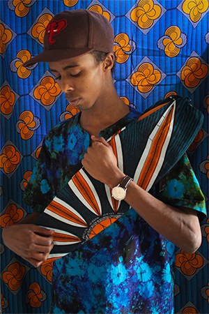
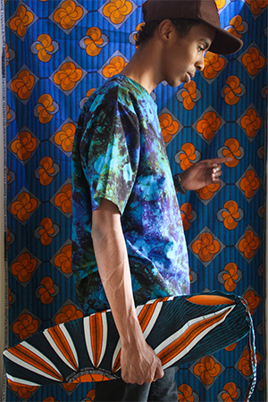
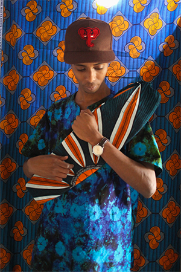
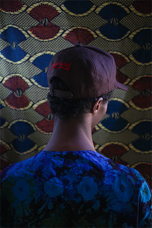
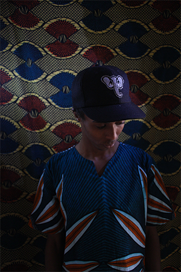
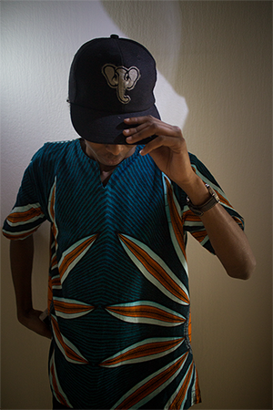
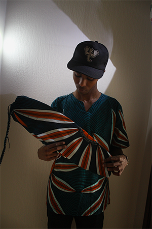
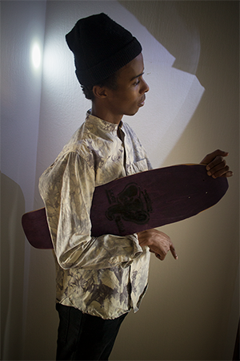

What is Nyumbani Skateboards?
Nyumbani Skateboards is an homemade skate and clothes company which is inpired by Africa, recycling, secondhand and oldschool skateboards that wants to mediate a feeling of simplicity. The brand is founded by the two brothers Jonathan Johansson and David Johansson from Sweden. The company was founded the year 2013. Mostly because they wanted to express their main interests in "Design, Skateboarding and Africa" through creativity. The word Nyumbani comes from Kiswahili and means Home. A language that is widely spoken around east africa like, Kenya, Burundi, Tanzania and Uganda.
How we manufacture our boards
Our idéa is to make new minicruisers from old used Skateboards. Skaters use their boards a certain amount of time. When they don't have any use of them anymore we take care of it and reuse them. The board goes through a couple of steps before we deliver it to the new customer.
Our clothes
All the shirts you see on our webpage are made from Tanzania by giving the people an oportunity to earn a decent salary.
The colourful garment is called Kanga (or khanga) from Swahili. It is worn by women and occasionally by men throughout the African Great Lakes region. It is a piece of printed cotton fabric, about 1.5 m by 1 m, often with a border along all four sides (called pindo in Swahili), and a central part (mji) which differs in design from the borders. The kanga is culturally significant on Eastern coast of Africa, often given as a gift for birthdays or other special occasions.
Klicka för större bild
- 
- 
- 
- 
- 
- 
- 
- 